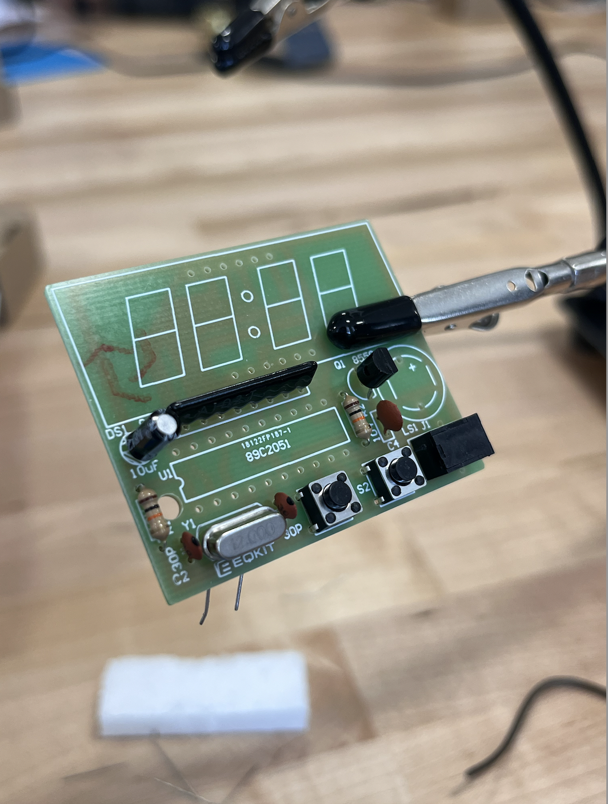
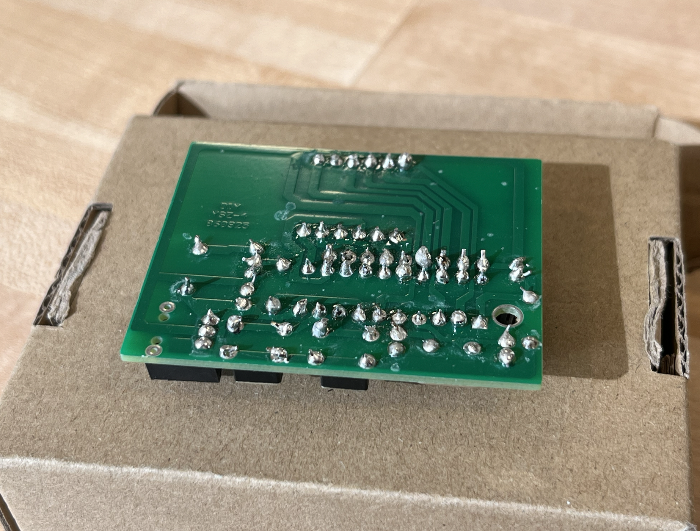

Process:
1. Tools set up.
2. Read the instructions.
3. Soldered all the elements onto the circuit board.

4. Cut off extra solders.
5. Finished soldering.


Reflection:
Overall, the soldering was successful, and all functions of the alarm clock worked.
Soldering is so fun, and it’s rewarding to assemble an electronic device by myself.
However, I encountered a big problem while soldering. I initially soldered the digital display with the wrong orientation.
It was upside down, so I had to remove it and solder it again.
This was a time-consuming task, since it’s not easy to remove the solder once it has been applied.
This experience taught me to check the components more carefully, not only for the direct signs on them but also for the actual function related to their orientation (e.g., checking the position of dots for the time display, as this information might not be marked on the side of the component).